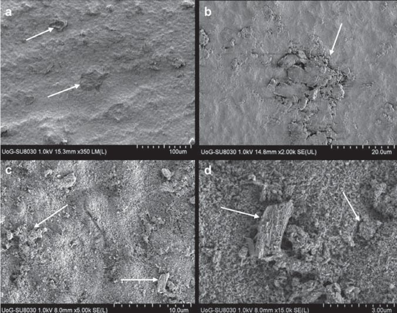
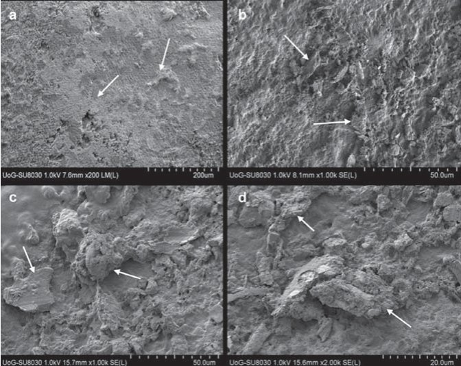
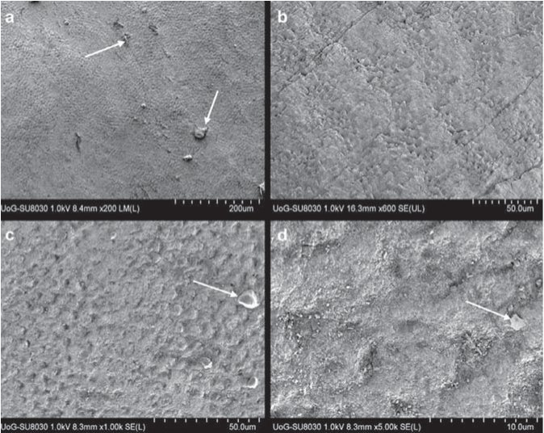
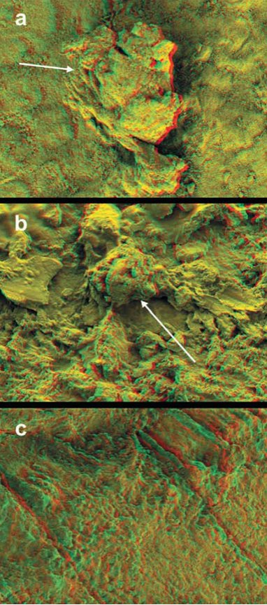
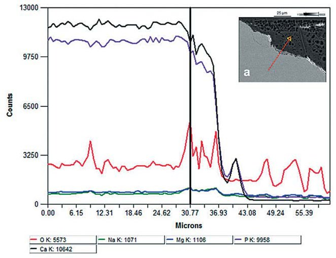
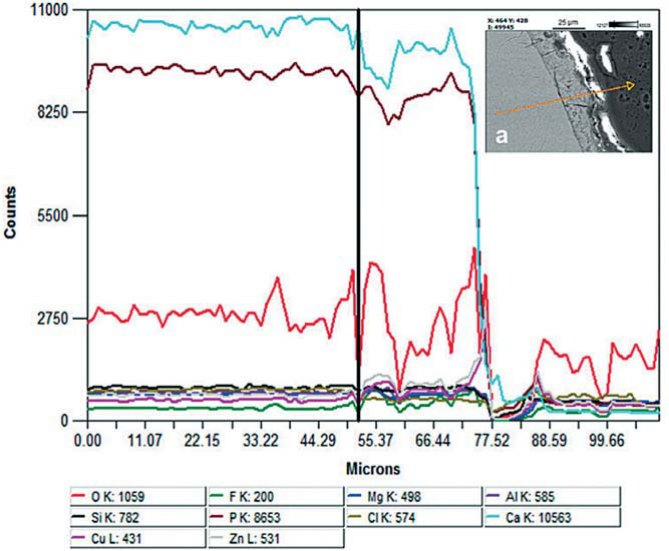
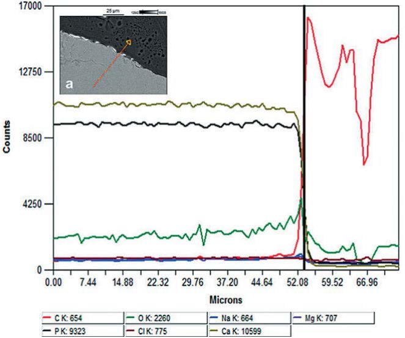
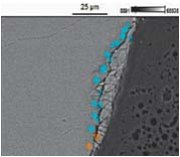
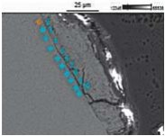
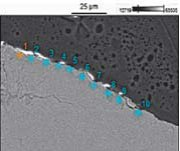

Наука · журнал «ДентАрт» 2013 №4 (73)
Ремінералізація зубними пастами демінералізованої емалі
REMINERALIZATION OF DEMINERALIZED ENAMEL BY TOOTHPASTES. A SCANNING ELECTRON MICROSCOPY, ENERGY DISPERSIVE X-RAY ANALYSIS, AND THREE-DIMENSIONAL STEREO-MICROGRAPHIC STUDY
Вступ
Мінеральна фаза дентину і емалі – це суміш складників, включаючи різну кількість вуглецевих апатитів з їх більшою різноманітністю у складі дентину, ніж в емалі (Еліот, 1997). Зниження мінералізації (демінералізація) і її посилення (ремінералізація) в емалі є динамічним фізико-хімічним процесом, збалансованим у здоровій порожнині рота за більшості обставин. Проте коли бактерії порожнини рота формують біоплівку на поверхні емалі (наліт), ця плівка піддається бродінню під впливом вуглеводів їжі (Паєс Леме і співавт., 2004), внаслідок чого відбувається різке зниження рН через вироблення органічних кислот, в основному молочної кислоти, в результаті метаболічної активності біоплівки. Якщо низький рівень рН підтримується упродовж деякого часу, мінеральна фаза розчиняється до такого ступеня, що це призводить до переважання демінералізації. При припиненні дії вуглеводів рН поступово зростає, при цьому відновлюються перенасичені умови, що призводить до певної зміни мінеральної фази (Шейхем, 2006).
У фізіологічних умовах рідини порожнини рота (слина, рідина біплівки) містять кальцій (Са) і фосфати (Р) у перенасичених концентраціях у порівнянні з мінеральною фазою емалі і, як результат, іони кальцію і фтору поступово нагромаджуються на поверхні емалі, зокрема, на ділянках з їх меншою концентрацією. Це може розцінюватися як природний захисний механізм, що виконується слиною для збереження мінерального складу емалі у роті (Рейнолдс, 2008). Внаслідок хімічної однорідності емалі процес її ремінералізації досить складний. Доступність кальцію залишається головним стримуючим чинником у ремінералізації емалі (Волш, 2009).
Ремінералізація емалі вивчалася упродовж більш ніж 100 років, у процесі чого було встановлено, що «неінвазивне лікування початкового карієсу шляхом ремінералізації має усі шанси бути прийнятнішим клінічним методом лікування цього захворювання» (Рейнолдс, 2008). Ремінералізація твердих тканин зуба може заповнити розрив між профілактикою та інвазивними процедурами у клінічній стоматології (Прадііп і Прасанна, 2011).
Фтор залишається найліпшим агентом з доведеною здатністю до ремінералізації. Невелика кількість фторидів у слині чинить вплив на зрушення балансу від демінералізації до ремінералізації. Це пов'язано з підвищенням осідання фосфатів кальцію під впливом фтору і формуванням фторгідроксиапатиту в тканинах зубів (Кейт і Фезерстоун, 1991, Кейт, 1999). Фторапатит менш розчинний у кислому середовищі, ніж гідроксиапатит, який, у свою чергу, менш розчинний, ніж вуглецеві апатити (Шелліс і співавт., 1993; Шелліс і Вілсон, 2004). Окрім фторидів, для забезпечення ремінералізації можуть використовуватися деякі інші речовини. Клінічна ефективність цих агентів залежить від кількох ознак, названих у таблиці 1 (Зеро, 2006).
| 1. Мають низку переваг над фторидами |
| 2. Підвищують власні ремінералізуючі властивості слини (у складі містяться мінеральні компоненти для пацієнтів з ксеростомічним синдромом) |
| 3. Доставляють кальцій і фосфати у поверхневу емаль |
| 4. Працюють в кислому рН-середовищі |
| 5. Не сприяють утворенню каменів |
Один із цих ремінералізуючих матеріалів — біоактивне скло, що його розробив Генч у другій половині 1960-х (Генч і співавт., 1972). Завдяки своїй високій біоактивності воно має кілька варіантів застосування у стоматології, наприклад, в реабілітації дентоальвеолярного комплексу (Вілсон і співавт., 1994) і регенерації періодонтальної кістки (Ловелас і співавт., 1998). Біоактивне скло нещодавно було введене до складу зубних паст як мінералізуючий агент для запобігання карієсу зубів, а також в ролі десенситайзера в лікуванні гіперчутливості зубів (Венг і співавт., 2011). Біоактивне скло може також використовуватися після відбілювання зубів, оскільки воно утворює захисний шар на поверхні емалі і збільшує кількість кальцію і фтору в ній (Гджоргієвська і Ніколсон, 2011). Нарешті, недавні лабораторні дослідження виявили, що біоскло S53P4 може бути використане для стимуляції мінералізації у живій сполучній тканині в декальцинованій дентинній матриці, а також у натуральному дентині з відкритими дентинними канальцями (Салонен і співавт., 2009).
Зубні пасти, що містять гідроксиапатит (зубні пасти ГА), були ефективні у профілактиці карієсу, лікуванні гіперчутливості і захворювань пародонту (Нива і співавт., 2001, Парк і співавт., 2005). В умовах in vitro зубні пасти, що містять гідроксиапатит, показали вищий ремінералізуючий ефект у порівнянні з амінофторидними пастами на коров'ячому дентині, і такі ж самі результати були отримані для емалі (Тщоппе і співавт., 2011). В іншому дослідженні було доведено, що пасти, які містять медичний гідроксиапатит, сприяли рекристалізації декальцинованої поверхні емалі (Нішимура і співавт., 1999).
Хлорид стронцію було розроблено як перший тубулярний блокуючий агент, використаний у зубних пастах, і представлено під назвою бренду «Сенсодин» близько 50 років тому (Маркович, 2009). Через несумісність з фтором цей продукт не містив фторидів. Проте оригінальна формула була модифікована шляхом введення фторидів і заміщення хлориду стронцію ацетатом стронцію, який, у свою чергу, сумісний з фтором. Використання цієї пасти веде до запечатування дентинних канальців і відкладення в них стронцію (Ерл і співавт., 2010). Цей факт наштовхує на припущення, що окрім зниження чутливості, це може зіграти чималу роль у захисті зубів від карієсу.
Мета цього дослідження — вивчити ремінералізаційний потенціал різних складів зубних паст — паст, що містять біоактивне скло, гідроксиапатит або ацетат стронцію з фтором, — при нанесенні на демінералізовану емаль. Відправною точкою спостереження була відсутність різниці в ремінералізуючій здатності усіх досліджуваних паст.
Матеріали і методи
Дослідження провадилося на постійних молярах, видалених за ортодонтичними показаннями. Усі процедури виконувалися винятково зі згоди і з розумінням суб'єктів.
Підготовка зразка
Корені були зрізані до цементно-емалевого з'єднання алмазним бором у високошвидкісному наконечнику, залишки пульпи видалені. Коронкові частини ретельно оброблено ультразвуком і відполіровано за допомогою полірувальних паст і головок. Залишки пасти змивалися струменем води впродовж 3-х хвилин. Після цього зуби у випадковому порядку розділили на 3 групи. Усі групи було піддано п'яти послідовним циклам демінералізації і ремінералізації. Демінералізація провадилася за допомогою штучного кислотного карієсного гелю, приготованого згідно з методом, що його описали Арендс і співавт. (1990).
Гель складається із 6% гідроксиетилцелюлози, молочної кислоти в концентрації 1 моль/л та гідроксиду натрію в концентрації 1 моль/л, встановлений рівень pH = 4,5. Після кожного 24-годинного циклу демінералізації зразки промивали під струменем води для видалення залишків кислотного карієс-гелю і обробляли такими пастами упродовж однієї хвилини: перша група — пастою Мірасенситив Геп+, Мірадент, Хагер унд Веркен ГмбХ і Ко КГ (Дуйсбург, Німеччина); друга — Міравайт ТіСі, Мірадент, Хагер унд Веркен ГмбХ і Ко КГ; третя група оброблялася пастою Сенсодин Репід Реліф, ГлаксоСмітКляйн (Суррей, Велика Британія). Діючі речовини паст подано в таблиці 2. Далі пасти змивали за допомогою зубної щітки під струменем води упродовж 5 хвилин для видалення можливих решток.
| Зубна паста | Компанія-виробник | Активний компонент |
|---|---|---|
| Мірасенситив Геп+ | Мірадент, Хагер унд Веркен | 30% гідроксиапатиту, ксиліт, 1450 ppm фториду |
| Міравайт | Мірадент, Хагер унд Веркен | 5,5% кальцій-натрій-фосфо-силікат (біоскло 45S5, розмір часток <90 / μm) |
| Сенсодин Репід Реліф | ГлаксоСмітКляйн | 8% ацетату стронцію і 1040 ppm NaF |
Скануюча електронна мікроскопія, тривимірна стереофотографія (анагліф)
Після експериментальних процедур зуби розрізали навпіл уздовж подовжньої осі у щічно-язичному напрямі. Половина усіх зразків досліджувалася без покриття із застосуванням холодної катодної автоемісійної скануючої електронної мікроскопії (FEG-SEM Хітачі СУ 8030, Токіо, Японія). Перед тим зразки було поміщено у вакуумний осушувач — для досягнення достатнього вакууму, щоб отримати зображення за допомогою FEG-SEM.
Тривимірна (3D) стереофотографія (анагліф) створювалася за допомогою двох стереофотографій під кутом 0 і 7 градусів. Для першої фотографії використовувався зелений фільтр, для другої — червоний. Мікрофотографії були накладені одна на одну і переглядалися в анагліфних 3D окулярах.
Скануюча електронна мікроскопія/енергодисперговане рентгендослідження
Друга половина усіх зразків була поміщена в пластикові форми із зовнішнім діаметром 32 мм, при цьому поверхня із зрізом звернена до дна форми. Після цього форми були заповнені пластмасою ЕпоСин (Буеллер, Лейк Блафф, США, партія № 20-8140-032). Згодом підготовані зразки полімеризувалися у вакуумному осушувачі впродовж 24 годин. Поверхня кожного блоку була зрізана плоскими карборундовими дисками з водяним охолодженням (320, 600, 1200 зернистості; Буеллер) і відполірована алмазним полірувальним папером (3М ТМ Полірувальний папір 1 мікрон 8000 зернистості ясно-зеленого кольору; 3М Дентал Продьюктс, Сент Пол, США), після чого на них було нанесене вуглецеве покриття (модель С105, Едвардс Ко, Велика Британія). Підготовлені зразки аналізувалися холоднокатодною FEG-SEM (Хітачі СУ 8030) у зворотно розсіяному електронному режимі (SEM-BEI). Експеримент провадився з номінальним збільшенням х1000 і 15 кВ прискорюючою напругою. Якісний енергодисперсійний рентгеноспектральний мікроаналіз (ЕРСМА) провадився за допомогою системи Термо Норан (Термо Саінтифік, Рокфорд, США) НСС 7 з ультрасухим детектором (з полем площею 30 мм2), шляхом збирання рентгенівських променів, що проходять по зрізу лінії, яка йде від пластмаси до емалі, для визначення поширення елементів, а також їх відкладень на поверхні емалі у разі їх наявності.
Після цього провели напівкількісний аналіз точки ЕРСМА на штучно демінералізованій поверхні емалі для визначення елементних рівнів (%) натрію (Na), магнію (Mg), алюмінію (Al), фосфору (P) і кальцію (Ca). Для кожного зразка у випадковому порядку було вибрано десять точок і підраховано середні значення. Статистичне дослідження велося шляхом одностороннього дисперсійного аналізу (ANOVA). При виявленні значних статистичних відмінностей (рівень значущості р< 0,05) провадився тест адитивності Тьюкі.
Результати
Мікрофотографії FEG SEM, зібрані з усіх тестованих груп (фото 1-3), зафіксували різні рівні демінералізації емалі з втратами міжпризматичної речовини і порами, подібно до емалі після протравлювання. Штучно демінералізована емаль після обробки пастою Мірасенситив Гэп+ (фото 1) мала вигляд пористої, з відкладеннями на поверхні емалі, які заповнювали її нерівності. Також спостерігалися втрати міжпризматичної речовини. Після дії пасти Міравайт ТіСі (фото 2) на штучно демінералізовану емаль на її поверхні з'явилися відкладення біоактивного скла, міцно прикріпленого до неї. Ці відкладення також заповнювали видимі нерівності на поверхні емалі. Після використання пасти Сенсодин Репід Реліф (фото 3) штучно демінералізована емаль більшою мірою залишилася демінералізованою без ознак ремінералізації і з незначними відкладеннями.



Тривимірна стереофотографія (анагліф) штучно демінералізованої емалі (фото 4) дає більш зрозуміле відображення поверхні емалі після використання ремінералізуючих зубних паст. На фото 4 а зафіксовано ефект використання пасти Мірасенситив Геп+. Чітко видно поодиноке відкладення на поверхні демінералізованої емалі. Фото 4 b відображає ефект пасти Міравайт ТіСі, де немає ознак демінералізації емалі, але уся її поверхня покрита відкладеннями біоактивного скла. Нарешті, фото 4 c фіксує результат дії пасти Сенсодин Репід Реліф, при якому поверхня емалі залишилася демінералізованою без щонайменших ознак ремінералізації. СЕM мікрофотографії полірованих подовжніх зрізів відображають захисний шар на поверхні зразків, оброблених пастами Мірасенситив Геп+ і Міравайт ТіСі (мал. 5 а, 6 а), що утворився за рахунок поверхневих відкладень. Захисний шар відсутній у зразка, який піддавався дії пасти Сенсодин Репід Реліф (мал. 7 а).

Якісний аналіз зібраних рентгенівських променів засвідчив, що різні зубні пасти мають різну дію на складники демінералізованої емалі. Мірасенситив Геп+ (мал. 5) показав незначне зниження рівня Ca і P у поверхневій емалі, у зв'язку з чим відкладення складалися з Ca і P. Міравайт ТіСі дала невелике зниження рівня Ca і P у поверхневій емалі, а відкладення були складними структурами, що складалися з Ca, P, F (фтор), Mg, Al, Si (кремній), P, Cl (хлор), Ca, Cu (мідь) і Zn (цинк). До того ж зафіксовано збільшення рівня Cu, Zn і F у поверхневій емалі. І нарешті, Сенсодин Репід Реліф (мал. 6) показав зниження рівня Ca і P у поверхневій емалі. Відкладень також не було виявлено.



Напівкількісний точковий аналіз ЕРСМА (таблиця 3) підтвердив результати попередніх досліджень. А саме, було зафіксовано значне статистичне підвищення рівнів Na і Mg у зразках, оброблених пастою Сенсодин Репід Реліф, і значне підвищення рівня Ca після дії пасти Міравайт ТіСі. Рівень фосфатів був вищим при використанні пасти Мірасенситив Геп+ у порівнянні з пастою Міравайт ТіСі.
| Використані зубні пасти (SEM/EDX-BE1) | Елементи (стандартне відхилення в дужках) | ||||
|---|---|---|---|---|---|
| Na | Mg | Al | P | Ca | |
| Мірасенситив Геп+  | 0.256b (0.049) | 0.055b (0.013) | 0.037 (0.009) | 28.188a (1.739) | 54.482b (2.719) |
| Міравайт  | 0.213a (0.121) | 0.042a (0.018) | 0.0825 (0.085) | 25.833a (3.949) | 58.68ab (6.916) |
| Сенсодин Репід Реліф  | 0.332ab (0.094) | 0.085ab (0.019) | 0.0425 (0.005) | 27.104 (2.957) | 52.244ab (3.237) |
* Односторонній дисперсійний аналіз (за яким іде тест за критерієм Тьюкі на перевірку достовірності): статистично значущі відмінності позначені однаковими індексами.
Ремінералізація — це процес повільної преципітації мінеральних компонентів до твердих тканин зуба (Воленвейдер і співавт., 2007). Було доведено, що кілька індивідуальних чинників можуть робити вплив на ремінералізацію, серед них активність і глибина ураження, особливості харчування, активність слини, стратегії видалення нальоту і використання фтору. Ці чинники формують натуральний процес боротьби з розвитком ураження, що у свою чергу може спрямувати баланс у бік ремінералізації (Х'ю і співавт., 2009, Петерс, 2010). Морфологічну будову демінералізованої емалі було охарактеризовано раніше (Гджоргієвска і співавт., 2009), вона складається з тонких нерівних емалевих стержнів без чітких меж і широких міжстержневих зон. Це дослідження спрямоване на використання потенційно ремінералізуючих зубних паст.
Різні зубні пасти з гідроксиапатитами чинять схожий вплив на можливості ремінералізації емалевих і дентинних підповерхневих уражень (Тщоппе і співавт., 2011). Спостереження за емаллю після використання паст з гідроксиапатитом показали, що частки гідроксиапатиту вступають у реакцію з поверхнею емалі, підвищуючи концентрацію іонів Ca і P, в результаті чого демінералізована поверхня відновлюється. До того ж залишки у формі відкладень на поверхні можуть використовуватися як депо Са і Р у разі кислотних впливів у майбутньому. Також слід підкреслити, що пасти з гідроксиапатитами можуть мати пристойний ремінералізуючий ефект на початковій стадії карієсу зубів завдяки наявності часток гідроксиапатиту, які можуть заповнити дрібні пори на демінералізованих поверхнях емалі (Джеон і співавт., 2006). У цьому ж дослідженні (Джеон і співавт., 2006) було доведено, що додавання фтору не дає синергетичного ефекту на ремінералізацію, і це згідно з результатами цього дослідження підтвердилося тим, що на поверхні емалі фтору не виявлено.
Пасти із вмістом біоактивного скла здатні ремінералізувати пошкоджені поверхні емалі, що було доведено в попередніх дослідженнях (Гджоргієвська і Ніколсон, 2010). Біоактивність біоскла полягає у його здатності вступати в реакцію з тканинними рідинами, внаслідок чого формується шар гідроксикарбонат апатиту (ГКА) на поверхні скла. Коли біоскло вступає в контакт з тканинною рідиною, відбувається швидке залужнення Na+ і розчинення Ca2+, PO43-, а також інших видів гідратованих силікатів з поверхні скла. На скляній поверхні утво шар, багатий кремнієм, який формує місця кристалізації для преципітації фосфату кальцію, який надалі кристалізується у гідроксикарбонат апатиту (Генч і Андерсон, 1993).
Ремінералізація емалі за допомогою зубних паст, що містять біоактивне скло, можлива завдяки проникненню різних компонентів у структуру емалі, як показує рентгенівське дослідження. Напівкількісний аналіз демонструє можливість усіх цих паст поповнювати концентрацію Са і Р у пошкодженій емалі. Також було виявлено, що після використання паст з біоактивним склом емаль має вигляд «квіткової галявини» — завдяки преципітації нових мінеральних фаз, що не мають міжпризматичної речовини, тоді як емалеві стержні залишаються незмінними (Гджоргієвська і Ніколсон, 2011). Другий етап ремінералізації — це формування депо, які можуть бути резервуарами іонів для ремінералізації на пошкоджених ділянках поверхні емалі (Гджоргієвська і Ніколсон 2011).
Зубні пасти з 8% вмістом ацетату стронцію і 1040 ррm фтору у вигляді NaF з кремнієвою основою зазвичай використовують для лікування гіперчутливості. Лабораторне дослідження засвідчило, що дія на зразки дентину пасти, котра містить 8% ацетату стронцію, сприяє закриттю дентинних канальців і відкладенню в них стронцію (Ерл і співавт., 2010). Проте хоча і була продемонстрована можливість пасти закупорювати дентинні канальці, слідів відновлення ушкоджень поверхні емалі виявлено не було. Результати засвідчили, що на поверхні емалі не формувалися ні депо, ні захисний шар. До того ж, рівні Са і Р не збільшилися (проте спостерігалося невелике підвищення рівня Na і Mg).
Таким чином, жодна гіпотеза не була відкинута через відмінності ремінералізаційних потенціалів різних зубних паст. Пасти, що містять гідроксиапатит та біоактивне скло, дуже ефективні для ремінералізації, тоді як пасти з 8% вмістом ацетату стронцію і 1040 ррm фтору у вигляді NaF менш ефективні, якщо взагалі мають ремінералізаційний потенціал.
Висновки
Використання зубних паст, що містять гідроксиапатит або біоактивне скло, веде до відновлення ушкоджених зубних тканин. На поверхні емалі формується захисний шар з депо. Пасти, які містять гідроксиапатит, підвищують рівень Са і Р в емалі, тоді як пасти, що містять біоактивне скло, підвищують рівень як цих іонів, так і деяких інших (F, Mg, Al, Si, P, Cl, Ca, Cu і Zn). І навпаки, використання зубних паст з 8% вмістом ацетату стронцію і 1040 ррm фтору у вигляді NaF не веде ні до якої видимої ремінералізації.
У рамках обмежень цього лабораторного дослідження можна зробити висновок, що демінералізовану емаль можна ремінералізувати за допомогою зубних паст, що містять такі ремінералізуючі агенти, як біоактивне скло або гідроксиапатит. Подальші дослідження повинні вестися в умовах in vivo з метою оцінки впливу на процес ремінералізації факторів порожнини рота, таких як наявність слини і зубного нальоту.
Література
- Arends, J., Ruben, J. & Dijkman, A.G. (1990). The effect of fluoride release from a fluoride containing composite resin on secondary caries: An in vitro study. Quintessence Int 21, 671–674.
- Earl, J.S., Ward, M.B. & Langford, R.M. (2010). Investigation of dentinal tubule occlusion using FIB-SEM milling and EDX. J Clin Dent 21, 37–41.
- Elliott, J.C. (1997). Structure, crystal chemistry and density of enamel apatites. Ciba Found Symp 205, 54–67.
- Gjorgievska, E.S. & Nicholson, J.W. (2010). A preliminary study of enamel remineralization by dentifrices based on Recaldent (CPP-ACP) and Novamin (calcium-sodium-phosphosilicate). Acta Odontol Latinoam 23, 234–239.
- Gjorgievska, E. & Nicholson, J.W. (2011). Prevention of enamel demineralization after tooth bleaching by bioactive glass incorporated into toothpaste. Aust Dent J 56, 193–200.
- Gjorgievska, E.S., Nicholson, J.W., Iljovska, S. & Slipper, I. (2009). The potential of fluoride-releasing restoratives to inhibit enamel demineralization: An SEM study. Contributions, Sec Biol Med Sci MASA 30, 191–203.
- Hench, L.L. & Andersson, O.H. (1993). Bioactive glasses. In Introduction to Bioceramics, Wilson, J. (Ed.), pp. 41–62. Singapore: World Science Publishing Company.
- Hench, L.L., Clark, A.E., Schaake, J.R. & Schaake, H.F. (1972). Effects of microstructure on the radiation stability of amorphous semiconductors. J Non-Cryst Solids 8–10, 837–843.
- Jeong, S.H., Jang, S.O., Kim, K.N., Kwon, H.K., Park, Y.D. & Kim, B.I. (2006). Remineralization potential of new toothpaste containing nano-hydroxyapatite. Key Eng Mater 309–311, 537–540.
- Lovelace, T.B., Mellonig, J.T., Meffert, R.M., Jones, A.A., Nummikoski, P.V. & Cochran, D.L. (1998). Clinical evaluation of bioactive glass in the treatment of periodontal osseous defects in humans. J Periodontol 69, 1027–1035.
- Markowitz, K. (2009). The original desensitizers: Strontium and potassium salts. J Clin Dent 20, 145–151.
- Nishimura, K., Yamaguchi, Y. & Yoshitake, K. (1999). Demineralized enamel surface microstructure after brushing using toothpaste containing medical hydroxyapatite under FE-SEM observation. J Japan Stomatol Soc 48, 199–210.
- Niwa, M., Sato, T., Li, W., Aoki, H., Aoki, H. & Daisaku, T. (2001). Polishing and whitening properties of toothpaste containing hydroxyapatite. J Mater Sci Mater Med 12, 277–281.
Повний список літератури в редакції.